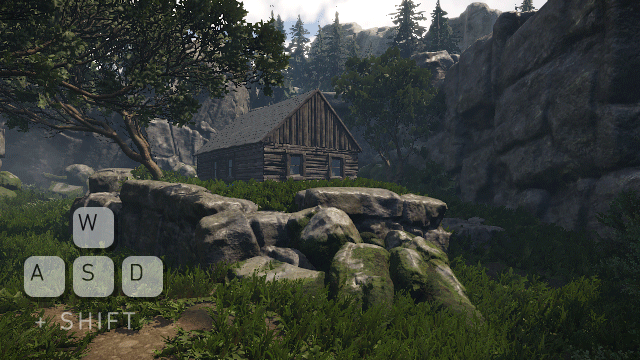
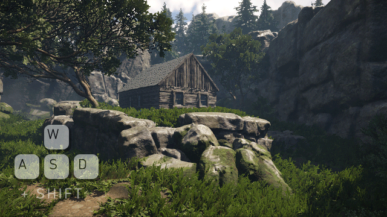
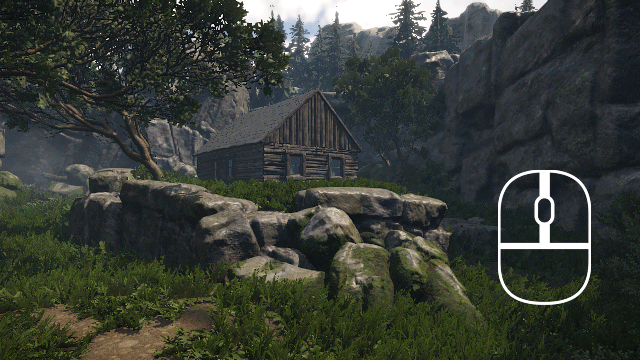
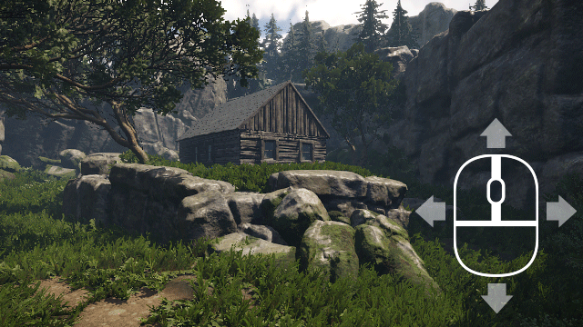
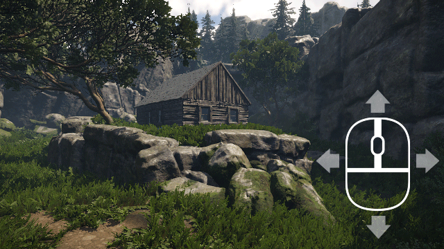
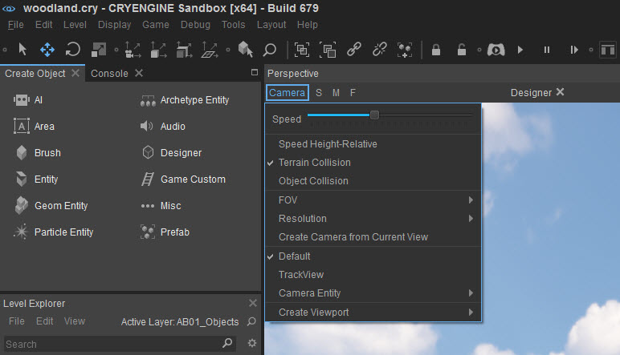
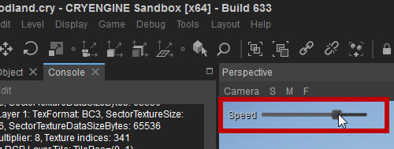
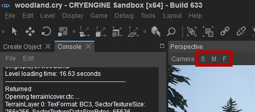
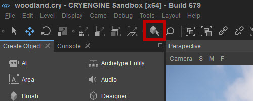

Viewport Navigation
Navigation
You can control the camera movement with the standard WASD keys, commonly used in First-Person Shooters and the Mouse.
- W to move forward
- S to move backward
- A to move (strafe) left
- D to move (strafe) right

Press W or S keys to go forwards and backwards and A or D to strafe left or right with the camera.
Press SHIFT together with any WASD key to zoom/strafe with increased speed.  
Roll the mouse wheel to move forward or backward.
When the mouse pointer is within the window, hold down the right mouse button and move the mouse pointer to rotate the view. 
Hold down the middle mouse button and move the mouse pointer to pan the view. 
Viewport Movement Speed Control
While moving around the Viewport with the WASD keys, the speed of movement can be increased or decreased in real-time by scrolling the mousewheel upwards or downwards respectively.
You can also change the movement speed by clicking Camera in the top-left corner of the Viewport and move the Speed slider:

Interactive Speed Slider
When using the mouse wheel while moving to change the movement speed, an interactive speed slider will appear in the top-left corner of the Perspective viewport which displays the current camera speed. You can click and drag this slider to change the movement speed:

Camera Speed Buttons
In the top-left corner of the Perspective viewport, next to the button for the Camera Settings, you'll find three buttons to set the camera movement speed to a preset value:

S stands for Slow, M for Medium and F for Fast.
Terrain Collision
By pressing Q, you can turn on Terrain Collision. When turned on, the camera will not move below the terrain, but slide along it.
Frame selected objects

If you have selected an object, Go to Selection button frames the selected object in your current Viewport (works both in perspective and orthographic views). An averaged center is calculated if more than one object is selected.